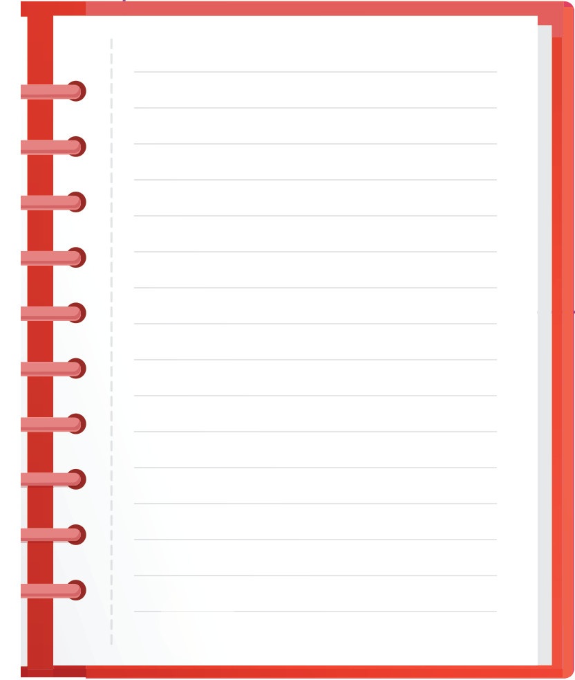

Thello dijet
Njeriu ndryshon vazhdimisht. Duke u rritur, ndryshon pamja dhe sjellja e tij. Sa më shumë rritet, bëhet më i përgjegjshëm për kryerjen e detyrave, dallon veprimet e mira nga ato jo të mira dhe është në gjendje të marrë vendime të arsyeshme e të argumentuara për situata të ndryshme jetësore.

Kështu, secili njeri ndërton personalitetin e tij. Rol të madh për formimin e personalitetit të njeriut luajnë familja, shoqëria dhe komuniteti ku ai jeton. Pranoji këshillat e prindërve dhe të mësuesve, sepse ata, me përvojën e tyre jetësore, të ndihmojnë ty të ndërtosh një personalitet të mirë dhe të dobishëm për veten dhe shoqërinë në të ardhmen.
9